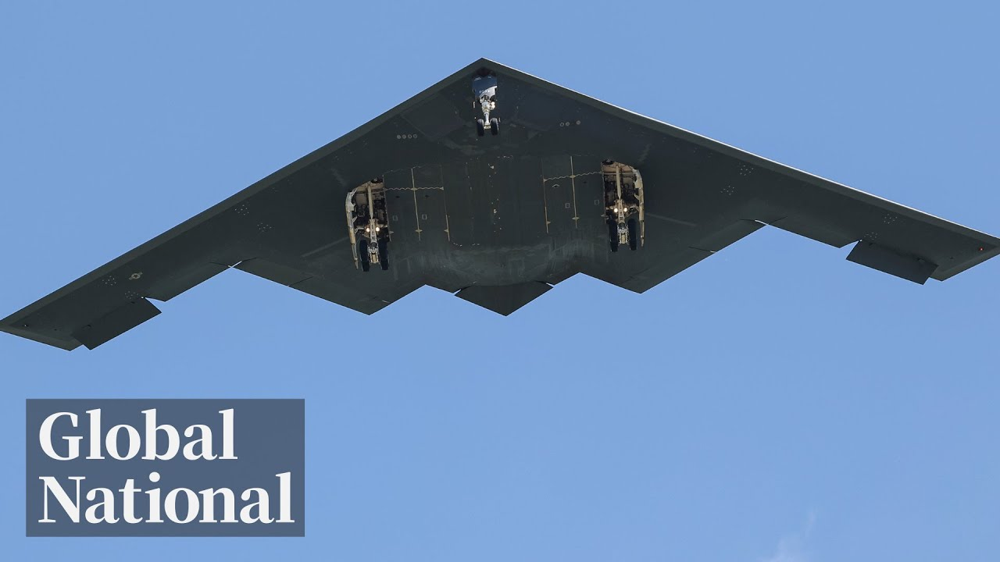

【Global News 20250627 白宫坚称美国炸弹摧毁了伊朗核能力】
Summary: The White House insists that U.S. bombs have destroyed Iran's nuclear capabilities, making the world safer. The Defense Secretary withheld certain details, while a statement from Iran's Supreme Leader and concerns over Iran’s continued threat remain. Progress and timeline for a potential Gaza ceasefire agreement are also covered. In addition, Canada passes a new law to speed up approvals for major infrastructure projects. Meanwhile, a Canadian director sees a dream come true.
摘要： 白宫坚称美国炸弹摧毁了伊朗核能力，世界变得更安全。国防部长未透露的细节、伊朗最高领袖的声明，以及伊朗仍具威胁的担忧。推动加沙停火协议的进展与时间表。加拿大加快大型基建项目审批的新法案通过。此外，加拿大导演的梦想成真。

⏱️ Estimated Reading Time: 31 min
📚 六级生词 📚 雅思生词 📚 托福生词 📚 专八生词 📚 SAT生词 📚 考研生词 📚 GRE生词 📚 高考生词
On this Thursday night, the White House insists American bombs destroyed Iran's nuclear capability.
周四晚，白宫坚称美国炸弹摧毁了伊朗的核能力。
The world is a much safer place.
世界变得更加安全。
What the Defense Secretary would not reveal, what Iran's supreme leader is claiming, and the fears of what Iran is still capable of.
国防部长未透露的内容、伊朗最高领袖的声明，以及伊朗仍具威胁的担忧。
A renewed push for a ceasefire deal to end the war in Gaza, what's being worked on, and when it could happen.
推动加沙停火协议的新努力，进展及可能的时间表。
Saving the way the legislation allowing big infrastructure projects in Canada to get built faster becomes law.
加拿大加快大型基建项目审批的新法案通过。
Plus, Vilnov, Deny Vilnov. A Canadian. A Canadian director's dream to have a licensed distril comes true.
此外，加拿大导演的梦想成真。
Global National with Donna Friesen. Good evening and thanks for joining us.
《全球国家》由Donna Friesen主持。晚上好，感谢收看。
The Trump administration continues to make the case that Iran's nuclear capability has been obliterated.
特朗普政府继续坚称伊朗的核能力已被彻底摧毁。
During a news conference today, the American Defense Secretary was combative when asked about a preliminary U.S. intelligence assessment that suggested the impact of last week's American bombing of Iranian nuclear sites may have been limited.
今日记者会上，美国国防部长对初步情报评估显示上周空袭效果有限的提问态度强硬。
The White House Press Secretary says that's flat out wrong.
白宫新闻秘书称这一说法完全错误。
When we look at the entirety of the intelligence that we have to this date, it concludes that these strikes on Iranians, the Iranian nuclear facilities were absolutely successful.
根据现有全部情报，此次对伊朗核设施的打击绝对成功。
It was a total obliteration.
这是彻底摧毁。
In his first public comment, since the ceasefire, Iran's supreme leader claimed victory.
停火后首次公开讲话中，伊朗最高领袖宣布胜利。
Iatola Hamani claims the American bombs failed to achieve anything significant.
哈梅内伊称美国炸弹未取得重大成果。
Caught in the noise of those competing narratives are the questions of what Iran is still capable of and what it intends to do.
争议背后，伊朗仍具何种能力及意图的问题悬而未决。
Jackson Prasco has our top story tonight.
Jackson Prasco带来今晚头条报道。
From the Pentagon, a clearer picture of the U.S. strike on Iran's nuclear program.
五角大楼披露美国打击伊朗核计划的更多细节。
President Trump directed the most complex and secretive military operation in history.
特朗普总统指挥了史上最复杂隐秘的军事行动。
Officials say so-called bunker-buster bombs seen here in a test video penetrated ventilation shafts at the Fordo facility, causing extensive destruction deep underground.
官员称测试视频中的"掩体粉碎者"炸弹穿透福尔多设施通风井，造成地下深层大面积破坏。
You want to call it destroyed, you want to call it defeated, you want to call it obliterated, choose your word.
称其被毁、被击败还是被抹除，悉听尊便。
A defensive defense secretary lashed out at the media for initially reporting the details of elite preliminary intelligence assessment, which suggested the possibility of less extensive damage that had merely delayed Iran's nuclear ambitions by weeks.
国防部长怒斥媒体泄露初步情报评估细节，该评估认为打击仅延缓伊朗核计划数周。
So let's take half-truths, spun information, leaked information, and then spin it in every way we can.
我们面对半真半假、加工和泄露的信息，还要被多方曲解。
But Secretary Pete Hegseth would not answer questions about what happened to Iran's stockpile of hundreds of kilograms of enriched uranium.
但Pete Hegseth部长拒绝回答伊朗数百公斤浓缩铀库存去向问题。
We're looking at all aspects of intelligence and making sure we have a sense of what was where.
我们正全面分析情报以掌握物资分布。
European intelligence officials reportedly believe the uranium.
欧洲情报官员据信认为铀...
Fuel for a nuclear bomb may have been removed before the strike.
核弹燃料或已在空袭前转移。
There was no indication to the United States that any of that enriched uranium was moved prior to the strike.
美方未发现浓缩铀在空袭前转移的迹象。
From any of the sites. Correct.
从任何场地都没有。是的。
Iran's supreme leader said the U.S. gained no achievement through its bombing, while Iran's parliament voted to suspend cooperation with the International Atomic Energy Agency, which wants independent inspectors on the ground.
伊朗最高领袖称美国空袭无果，同时议会投票中止与国际原子能机构合作——该机构要求派遣独立核查员。
Experts warn any surviving uranium could help Iran get back to the brink of building a bomb, even with key facilities destroyed.
专家警告残留铀料仍可助伊朗重返拥核门槛，即使关键设施被毁。
So if Iran has a stockpile of advanced centrifuges at an unknown site, that plus just a portion of its highly enriched uranium, it can move quickly back to that threshold status.
若伊朗在秘密地点存有先进离心机，配合部分高浓铀，可快速恢复临界状态。
The White House insists the U.S. is now on a diplomatic path with Iran with efforts underway to restart talks, but they say President Donald Trump is just as willing to use force again if negotiations fail.
白宫坚称美方转向外交途径推动复谈，但表示特朗普总统同样准备在谈判失败时再次动武。
OK, Jackson, Prasco in Washington. Thanks.
华盛顿的Jackson Prasco报道。谢谢。
There is a renewed push to end the war in Gaza, which has dragged on for 20 months.
推动结束持续20个月的加沙战争的新努力。
President Trump said yesterday that great progress is being made on Gaza, and there are reports in Israeli media that in return for the U.S. bombing those Iranian nuclear sites, Israeli Prime Minister Benjamin Netanyahu agreed to end the war in Gaza within two weeks.
特朗普总统昨日称加沙问题取得重大进展，以媒报道称以总理内塔尼亚胡同意两周内结束加沙战争，以换取美国空袭伊朗核设施。
My car is strong is in Tel Aviv tonight, Mike.
Mike Armstrong在特拉维夫报道。
Well, Donna, according to reports just now coming out in the media here in Israel, the broad strokes of the deal would already have been agreed to.
Donna，以媒最新报道称协议框架已达成。
First, the fighting in Gaza would conclude within two weeks.
首先，加沙战斗将在两周内结束。
The Israeli hostages would be released.
以色列人质将获释。
Hamas leadership would be allowed to leave for other countries, and four Arab nations would move into administer the strip, including Egypt and the UAE.
哈马斯领导层可离境，埃及和阿联酋等四个阿拉伯国家将接管加沙。
I think great progress is being made on Gaza.
我认为加沙问题正取得重大进展。
Now, Donald Trump appeared to hint at something Wednesday at the NATO meeting in the Hague.
特朗普周三在海牙北约会议上似有所指。
According to reports, the U.S. President is putting considerable pressure on Benjamin Netanyahu.
报道称美总统正向内塔尼亚胡施压。
In fact, it would have been part of the reason Trump was so forceful in the early hours of the ceasefire with Iran.
这或是特朗普在伊朗停火初期态度强硬的部分原因。
If the deal happens, there are other parts down the road.
若协议达成，后续还有其他内容。
The Abraham Accords would be expanded.
《亚伯拉罕协议》将扩展。
Other Arab and Muslim countries would recognize Israel.
更多阿拉伯和穆斯林国家将承认以色列。
With conditional unreforms to the Palestinian Authority, Israel would declare support for the two states' concept.
巴勒斯坦权力机构有条件改革后，以色列将声明支持两国方案。
Since the October 7th attacks in 2023, there are estimates more than 56,000 Palestinians have died, and one in four is at risk of starvation.
自2023年10月7日袭击以来，超5.6万巴勒斯坦人死亡，四分之一人口面临饥荒风险。
There are reports of Hamas fighters seizing aid, and Israel this week cut off shipments to the north.
有报道称哈马斯武装截获援助物资，以色列本周切断北部运输。
The group of clan leaders in Gaza Thursday promised to protect distribution points, sites they say have become death traps.
加沙部族领袖周四承诺保护分发点，称这些地点已成死亡陷阱。
They also had an appeal to the U.S. President.
他们还向美总统发出呼吁。
And the law of the Muslim Promshans says he calls on the UN, the West, and Donald Trump personally, Trump, he says, stopped the war in Iran and should stop it in Gaza.
穆斯林长老会呼吁联合国、西方及特朗普本人，称其叫停伊朗战争，也应叫停加沙战争。
That same appeal is coming from inside Israel as well.
以色列国内也发出相同呼吁。
These of hostages held rallies in Tel Aviv, again, appealing to Trump.
人质家属在特拉维夫集会再次呼吁特朗普。
Netanyahu posted on social media Thursday evening, saying after the victory over Iran, there is an opportunity for a dramatic expansion of peace agreements.
内塔尼亚胡周四晚在社媒发文，称战胜伊朗后迎来和平协议大幅扩展的机遇。
He doesn't mention the reports of a deal, but does say they're working hard on something.
他未提及协议报道，但表示正努力推进某项工作。
That said, there will be opposition in this country, including inside Netanyahu's coalition government.
尽管如此，以色列国内包括联合政府内部仍存反对声音。
As for Hamas, there are reports in Arab media that a spokesperson says negotiations are progressing and that there should be indirect talks in the coming days.
哈马斯方面，阿媒报道发言人称谈判进展顺利，未来数日将进行间接会谈。
Donna? Okay, Mike Armstrong in Tel Aviv. Thank you.
Donna？特拉维夫的Mike Armstrong报道。谢谢。
Israeli settlers attacked a Palestinian village in the occupied West Bank, killing three Palestinians and injuring at least seven Israeli security forces arrested five Israelis.
以定居者袭击西岸巴勒斯坦村庄，致3名巴勒斯坦人死亡、至少7人受伤，以安全部队逮捕5名以色列人。
Israel has built about 160 settlements since it occupied the West Bank and East Jerusalem, land Palestinians want, along with Gaza, for a future state.
以色列占领西岸和东耶路撒冷后建立约160个定居点，巴勒斯坦人希望将这些土地与加沙共建未来国家。
The Israeli settlements are considered illegal under international law.
国际法认定以定居点非法。
There's now a ceasefire between Iran and Israel, but Canadians have been warned to avoid travel to the region because of the risks.
伊朗与以色列现已停火，但加政府警告公民因风险避免前往该地区。
About 800 Canadians have already left.
约800名加拿大人已撤离。
Global affairs Canada says more than 5,500 are registered in Iran.
加拿大全球事务部称超5,500名公民在伊朗登记。
Not a severed diplomatic ties with Iran more than a decade ago.
加伊十余年前已断交。
And as Tariya Isri reports, that is adding another layer of difficulty for Canadians trying to get home.
Tariya Isri报道，这为加公民回国增添困难。
The calm of this Canadian backyard is a stark contrast to the bomb shelters in Tehran.
加拿大后院的宁静与德黑兰防空洞形成鲜明对比。
Most of the time I was thinking that, okay, it's done. I'm going to die.
这位伊朗裔加拿大人多数时间在想"我完了，要死了"。
This Iranian Canadian asked global news not to identify her.
她要求全球新闻匿名。
Over fears speaking publicly could endanger her family.
因担心公开言论危及家人。
As the regime launches, it's latest crackdown on dissidents.
正值伊朗政府最新镇压异见者行动。
With this war, it's getting worse and worse.
战争让情况日益恶化。
People are scared and hopeless.
民众恐惧绝望。
She returned to Canada Tuesday night, but left her new husband behind.
她周二晚返加，但新婚丈夫未能同行。
The hardest part was the point that he couldn't come in with me.
最痛苦的是他无法与我同行。
She had only traveled to Iran last month to get married.
她上月刚赴伊朗结婚。
With a couple's celebration was short-lived.
新婚喜悦转瞬即逝。
First attack was on our wedding night.
首轮空袭在我们新婚之夜。
I thought maybe it's from the AC.
我原以为是空调声响。
She, her husband and-in-laws fled Tehran for the Turkish border, then traveled 20 hours by bus to the Canadian Embassy in Ankara.
她与丈夫及公婆逃往土伊边境，再乘20小时巴士至加驻安卡拉使馆。
But her relatives could not continue on with her, since they don't have Canadian citizenship.
但非加籍亲属无法继续随行。
I went to the embassy, but there was no good answer for us.
使馆未给出满意答复。
Vancouver resident Sauceray Shahrieti is still in Tehran.
温哥华居民Sauceray Shahrieti仍在德黑兰。
She flew there for knee surgery after waiting months for treatment in BC.
她在BC省苦等数月治疗未果后赴伊做膝关节手术。
I woke up to the news of the war having started.
醒来得知战争爆发。
I was functionally in mobile.
我几乎无法行动。
A near-internet blackout has made it hard to get in touch with consular officials.
网络中断致难以联系领事官员。
But the permanent resident has reached the Canadian Embassy in Turkey.
但这位永久居民已联系加驻土使馆。
They essentially told me that counsellor services are only available for citizens.
对方称仅向公民提供领事服务。
Dennis Horak was Canada's last envoy to Iran, given the lack of diplomatic ties and the travel advisory to that country.
前加驻伊大使Dennis Horak称，断交与旅行警告限制救助选项。
He says auto-as-options are limited.
救助选择有限。
And complicate feelings for the Iranian Canadians who manage to lead.
成功撤离的伊朗裔加拿大人心情复杂。
That area is re-global news. Montreal.
Global新闻蒙特利尔报道。
A Canadian citizen has died in Miami, Florida, well in the custody of U.S. immigration and customs enforcement.
一名加公民在美移民海关执法局拘留期间死亡。
ICE says 49-year-old Johnny Navielo, who was also a U.S. permanent resident, was found unresponsive on Monday afternoon and pronounced dead 40 minutes later.
ICE称49岁美永久居民Johnny Navielo周一下午失去意识，40分钟后宣告死亡。
The agency says the cause of death is under investigation.
死因正在调查。
He was detained by ICE in May and was being held pending removal proceedings in connection with a drug trafficking conviction in 2023.
他五月被ICE拘留，因2023年贩毒定罪面临遣返程序。
There's a new snapshot of the cost of living in Canada that finds earnings are actually increasing faster than inflation.
加拿大生活成本最新数据显示收入增速超通胀。
Statistics Canada reports the average wage rose to nearly $1300 a week in April.
统计局称四月周薪均值近1300加元。
That's up 4.4% from a year earlier.
同比增4.4%。
By comparison, the consumer price index, which measures inflation, rose by 1.7% in April over last year.
同期衡量通胀的CPI同比增1.7%。
The Minister of Foreign Affairs, Mark Carney, sweeping legislation that allows the government to fast track infrastructure projects has been passed by Canada's Senate, paving the way for Mark Carney to deliver on his campaign promise to build big and build bold.
参议院通过加速基建审批的法案，助Mark Carney兑现"大建特建"竞选承诺。
David Aiken is in Ottawa. David Bill C5 has passed, but there were some concerns about it. What was the focus of the debate?
渥太华的David Aiken报道C5法案通过争议，辩论焦点何在？
Well, Don, I'll tell you what, 12 of the Senate's 105 members are indigenous.
参议院105席中12名为原住民议员。
And it was that group of senators that really took center stage today.
他们成为今日辩论核心。
All of them are doing for a delay to C5 because in their view, the bill fails to guarantee indigenous consent for those major infrastructure projects.
他们要求暂缓C5，认为法案未保障原住民对大型基建项目的同意权。
Two former MicMot chiefs who were in the Chamber, PJ Prosper and Brian Francis were among those making that point.
前MicMot酋长PJ Prosper与Brian Francis在场强调此点。
It comes along to being equal partners at the table.
我们要求成为平等合作伙伴。
And that's all we've been saying, your former chief, I'm a former chief.
这是我们一贯主张——您曾任酋长，我也曾任酋长。
We've been at the tables where, you know, consultation was talked about, but it wasn't true meaningful consultation.
我们参与过所谓"协商"，但非真正有意义的协商。
So I think we'll go with that.
因此我们坚持立场。
Now Senator Patty Laboucane Benson, she's a Maytee leader from Alberta.
阿尔伯塔省梅蒂人领袖Patty Laboucane Benson参议员
She argued in favor of the bill.
为法案辩护。
Now at this pivotal and deeply uncertain moment for Canada, there's an opportunity for the government to achieve great things by acting honorably.
在加拿大这个关键且充满不确定性的时刻，政府有机会通过诚信行事取得重大成就。
And it's an opportunity for all of our leaders to come together.
这也是所有领导人团结一致的机会。
Do the hard work of consultation and compromise.
进行艰难的协商和妥协。
Find common ground and grow this country.
找到共同点并推动国家发展。
David, the point of this legislation is to get infrastructure projects built fast.
大卫，这项立法的重点是快速建设基础设施项目。
So what happens now?
那么现在会发生什么？
That's right.
没错。
So the focus shifts back to Prime Minister Mark Carming and his cabinet.
因此，焦点重新回到总理马克·卡明及其内阁身上。
Premiers have given the cabinet a list of shovel ready projects.
各省省长已向内阁提交了一份“可立即动工”的项目清单。
And we have learned that the Prime Minister's office does indeed have about a dozen or more projects on its pony list, pony, in this case, standing for projects of national interest.
我们了解到，总理办公室确实有大约十几个或更多的“PONY”项目，这里的“PONY”代表国家利益项目。
And the plan is to announce most pony projects all at once, knowing that some may well get blocked by activists, but knowing also as well that many, say a wind power farm or an interprovincial hydroelectric corridor, will get quick, indigenous and environmental approval and proceed right away to construction.
计划是一次性宣布大多数PONY项目，尽管知道其中一些可能会被活动人士阻止，但也知道许多项目（如风力发电场或跨省水电走廊）将迅速获得原住民和环境批准并立即动工。
Got it.
明白了。
Okay, David Aiken in Ottawa.
好的，渥太华的大卫·艾肯。
Thanks David.
谢谢大卫。
The University of Toronto and Harvard University have agreed to allow some Harvard students to finish their program in Canada if they can't re-enter the U.S. because of visa restrictions.
多伦多大学和哈佛大学已达成协议，允许部分因签证限制无法返回美国的哈佛学生在加拿大完成学业。
Students returning to Harvard Kennedy School will be able to take online and in-person courses at U of T's monk school of global affairs and public policy.
返回哈佛肯尼迪学院的学生可以在多伦多大学蒙克全球事务与公共政策学院参加线上和线下课程。
U of T says the deal would not reduce the availability of spaces for other students.
多伦多大学表示，该协议不会减少其他学生的名额。
The Trump administration is attempting to revoke Harvard's ability to enroll international students over accusations of anti-semitism and racism.
特朗普政府正试图以反犹太主义和种族主义指控为由，撤销哈佛大学招收国际学生的资格。
Harvard has won a temporary injunction.
哈佛大学已获得临时禁令。
Using arguments at a closely watched trial, coming up the evidence the prosecution laid out against Sean Diddy-Colms.
在一场备受关注的审判中，检方提交了针对肖恩·迪迪-科尔姆斯的证据。
Closing arguments began today in the criminal trial of Sean Diddy-Colms.
肖恩·迪迪-科尔姆斯的刑事审判今日开始结案陈词。
The music mogul in entrepreneur faces charges of sex trafficking, racketeering conspiracy and transportation to engage in prostitution.
这位音乐大亨兼企业家面临性交易、敲诈勒索共谋和运送人员从事卖淫的指控。
He's accused of using violence and fear to run a criminal enterprise.
他被指控使用暴力和恐惧经营犯罪集团。
And he's pleaded not guilty.
他拒不认罪。
Eat through Garcha explains the case against him and a warning the story does include some disturbing details.
伊特·加查解释了针对他的案件，并警告该报道包含一些令人不安的细节。
Prosecutors laid out nearly five hours of evidence accusing Sean Diddy-Colms of using threats, violence and drugs to force his partners into sex acts over multiple years and across several states.
检方用近五小时的证据指控肖恩·迪迪-科尔斯多年来在多州使用威胁、暴力和毒品强迫伴侣发生性行为。
Just in U.S. attorney, Christie Slavic told jurors, Colms ran a criminal enterprise saying he used his resources to recruit and transport sex workers for events referred to in court as so-called freak-offs.
美国检察官克里斯蒂·斯拉维克告诉陪审员，科尔斯经营犯罪集团，利用资源招募和运送性工作者参加法庭所称的“怪胎派对”。
Slavic repeatedly telling jurors, Colms and his inner circle wouldn't take no for an answer.
斯拉维克多次告诉陪审员，科尔斯及其核心圈子不接受拒绝。
Using this video, a key piece of evidence as an example.
以这段关键证据视频为例。
Although he later apologized, the court heard Colms' bribed hotel security to prevent video of the 2016 assault of his former girlfriend, Cassie Ventura, from getting to law enforcement, which prosecutors said should leave no doubt he committed sex trafficking.
尽管他后来道歉，但法庭获悉科尔斯贿赂酒店保安，阻止2016年袭击前女友卡西·文图拉的视频落入执法部门手中，检方称这无疑证明他犯有性交易罪。
They cited alleged threats, including withholding rent, leaking sex videos or notifying family members as forms of control used by Colms.
他们列举了据称的威胁手段，包括克扣租金、泄露性爱视频或通知家人，作为科尔斯使用的控制形式。
And that Ventura, as well as another accuser, Jane, were performing for him under duress.
文图拉和另一名指控者简是在胁迫下为他提供服务。
Colms has pleaded not guilty and maintains he's innocent.
科尔斯拒不认罪并坚称自己无罪。
These cases are very difficult to prosecute.
此类案件很难起诉。
jurors love celebrities in the United States.
在美国，陪审员偏爱名人。
They do very well at trial, whether it's civil or criminals.
无论是民事还是刑事审判，他们都表现优异。
This former federal prosecutor, who's not directly involved in the case, says the defense is set to deliver closing arguments Friday and is likely to focus on its argument the women were willing participants.
这位未直接参与案件的前联邦检察官表示，辩方将于周五进行结案陈词，并可能重点论证女性是自愿参与者。
When you're talking about sex trafficking, it's challenging because consent is a defense.
谈论性交易时，由于“同意”可作为辩护理由，案件极具挑战性。
Colms could face up to life in prison.
科尔斯可能面临终身监禁。
If a verdict isn't reached by the 4th of July holiday when the courts will be closed, experts say that may point to a hung or deadlock jury on at least some of the counts.
专家表示，若7月4日假期前未达成裁决（法院将关闭），可能意味着至少部分指控的陪审团陷入僵局。
Nitu Garja Global News.
尼图·加贾，全球新闻。
Vancouver.
温哥华。
How about a vacation in North Korea?
想去朝鲜度假吗？
Ahead, how the secret of communist regime is making a tourism push.
接下来，这个神秘的共产主义政权如何推动旅游业。
This video from China shows the moment a young girl was rescued from a storm drain.
这段来自中国的视频显示了一名小女孩从排水沟中被救出的瞬间。
It's reported she'd been trapped there for seven hours during intense flooding.
据报道，她在暴雨引发的洪水中被困七小时。
It's one of several rescues being carried out across southwest China where multiple cities are dealing with the aftermath of heavy rain.
这是中国西南部多个城市应对暴雨后开展的多次救援之一。
At least six people have died and more than 80,000 have been forced from their homes.
至少六人死亡，超过八万人被迫离开家园。
Authorities in Ecuador have captured that country's most wanted fugitive more than a year after he escaped from prison.
厄瓜多尔当局抓获了该国头号通缉犯，此人越狱已逾一年。
Jose Adolfo Maseas, also known as Fito, leads one of Ecuador's most violent criminal organizations.
何塞·阿道夫·马西亚斯（别名“菲托”）领导着厄瓜多尔最暴力的犯罪组织之一。
He dominates the country's cocaine trade.
他掌控着该国的可卡因贸易。
The Ecuadorian military released footage of his arrest in the underground bunker where they say he was hiding.
厄瓜多尔军方公布了其藏身地下掩体中被捕的画面。
Fito's escape last January unleashed a wave of violence that led to a national state of emergency.
菲托去年一月越狱引发暴力浪潮，导致全国进入紧急状态。
He's now set to be extradited to the U.S., where he faces cocaine smuggling charges.
他现在将被引渡到美国，面临可卡因走私指控。
We usually see North Korea's leader overseeing ballistic missile launches and military parades.
我们通常看到朝鲜领导人监督弹道导弹发射和军事阅兵。
This week Kim Jong-un oversaw the opening of a tourist resort.
本周金正恩视察了一处旅游度假区的开业。
I'm joined by his wife and daughter as he toured the beach resort, which he hopes will boost North Korea's tourism industry.
他的妻子和女儿陪同他参观了这处海滩度假区，他希望此举能推动朝鲜旅游业。
State media claims the resort can host up to 20,000 visitors.
官方媒体称该度假区可接待两万名游客。
It claims to feature a beachfront water park and entertainment venues.
据称设有海滨水上乐园和娱乐场所。
It's set to open to domestic guests on July 1st.
计划7月1日对国内游客开放。
It's unclear when it will welcome foreigners.
何时对外国游客开放尚不明确。
A heavily sanctioned for decades for its nuclear weapons program North Korea is among the poorest countries in the world.
因核武器计划遭受数十年严厉制裁的朝鲜是全球最贫困国家之一。
35,000 feet flying southwest of Indonesia.
在印度尼西亚西南35000英尺高空。
Amazon spies Canadian talent for its first bond flick, who they picked, and why next.
亚马逊为其首部邦德电影物色加拿大人才：他们选择了谁及原因。
After 37 years, renowned fashion editor Anna Winter is stepping down as editor-in-chief at American Vogue.
37年后，著名时尚编辑安娜·温图尔将卸任《Vogue》美国版主编。
The 75-year-old fashion powerhouse reportedly broke the news to her staff today.
据报道，这位75岁的时尚巨头今日向员工宣布了这一消息。
She will remain with Vogue as its global editorial director and continue in a role as Contan ass global chief content officer.
她将继续担任《Vogue》全球编辑总监和康泰纳仕全球首席内容官。
With nearly $8 billion in box office receipts, James Bond is among the top five movie franchises of all time.
凭借近80亿美元票房，詹姆斯·邦德跻身影史前五电影系列。
Amazon bought the creative rights earlier this year, and this week it picked Canadian Danny Villeneuve to direct the next Bond movie.
亚马逊今年早些买下创意版权，本周选定加拿大导演丹尼·维伦纽瓦执导下一部邦德电影。
We don't know who will play the next Bond now that Daniel Craig has moved on, but as Red Man Shannon reports, this won't be the first time a Canadian has played a key role on the set of 007.
我们尚不知谁将接替丹尼尔·克雷格出演新邦德，但正如雷德曼·香农报道，加拿大人并非首次在007剧组扮演关键角色。
In the four years since the last Bond movie, there has been an MI6 like secrecy about what and who comes next.
自上部邦德电影以来的四年间，关于续作内容和人选一直存在类似军情六处的保密状态。
But now some cover has been blown about the next 007.
但现在关于下一任007的一些秘密已被揭开。
Or should that be 007?
或者该说007？
Danny Villeneuve will take charge of James Bond, the acclaimed Quebec director of movies like Doom.
丹尼·维伦纽瓦将执导詹姆斯·邦德电影，这位魁北克导演曾执导《银翼杀手2049》等佳作。
Everyone is wired for what your bones do.
（注：此句为电影台词片段，无明确上下文）
Arrival and Asandee.
《降临》和《沙丘》。
Although he's been directing films abroad for the past 15 years, I think we feel a close connection to him.
尽管过去15年他一直在海外执导电影，但我们仍感到与他有紧密联系。
Villeneuve will be joined on the Bond team by his partner in work and life, Canadian producer Tanya La Point.
维伦纽瓦的工作和生活伴侣、加拿大制片人坦尼娅·拉普安特将加入邦德团队。
I'm very curious to see how Danny Villeneuve signature will adapt to the rhythm of James Bond's films.
我很好奇丹尼·维伦纽瓦的标志性风格如何适应詹姆斯·邦德电影的节奏。
In a statement Villeneuve said, I grew up watching James Bond films with my father.
维伦纽瓦在声明中表示：“我从小和父亲一起看詹姆斯·邦德电影。
To me, he's sacred territory.
对我而言，这是神圣领域。”
MI6 and James Bond are quintessentially British, but Villeneuve is far from the first Canadian to be part of the franchise.
军情六处和詹姆斯·邦德本质上是英国的，但维伦纽瓦远非首位参与该系列的加拿大人。
You're Canadian?
你是加拿大人？
You're working Canadian intelligence.
你在加拿大情报部门工作。
Including founding producer Harry Salsman.
包括创始制片人哈里·萨尔茨曼。
You damaged my organization.
你破坏了我的组织。
Bond villain actor Joseph Weisman.
邦德反派演员约瑟夫·怀斯曼。
You never take me to dinner looking like this, James.
你从不带这样打扮的我共进晚餐，詹姆斯。
And Miss Monnie Penny, Louis Maxwell.
还有“钱小姐”洛伊丝·马克斯韦尔。
35,000 feet flying southwest over Newfoundland.
在纽芬兰西南35000英尺高空。
And it's widely believed in Fleming based Bond on Canadians by William Stevenson.
普遍认为弗莱明笔下的邦德原型是加拿大人威廉·斯蒂芬森。
So who will portray him next?
那么谁将接棒出演？
Even super fans are left guessing.
即便是铁杆粉丝也只能猜测。
I think he knows who he's going to want to play Bond and what his kind of take on Bond is.
我想他知道自己想选谁演邦德以及他对邦德的诠释方向。
I think a new Bond will be announced by the end of the summer.
我认为新邦德人选将在夏末公布。
With Villeneuve already committed to Dune 3, Bond 26 could yet be years away.
由于维伦纽瓦已承诺执导《沙丘3》，第26部邦德电影可能还需数年。
Redmond Channel Global News London.
雷德蒙·香农，全球新闻伦敦站。
Hopefully not years.
希望不用等那么久。
That is Global National for this Thursday.
以上就是本周四的《全球国家》。
I'm Donna Friesen.
我是唐娜·弗里森。
Tonight's your Canada Showcase's Picton Nova Scotia, North Beach Provincial Park Ontario, and Parkland County, Alberta.
今晚的《加拿大风采》将展示新斯科舍省皮克顿、安大略省北滩省立公园和阿尔伯塔省帕克兰县。
Please keep them coming.
请继续投稿。
Send your pictures of Canadian pride to globalnationalaglobalnews.ca.
将展现加拿大自豪感的照片发送至globalnationalaglobalnews.ca。
Thanks for watching.
感谢收看。
Bye-bye.
再见。